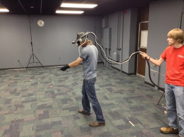

Welcome to the Simulation and Interaction within Virtual Environments Lab at the University of Minnesota Duluth. 
The lab consists of a 21ft x 33ft space containing a WorldViz PPT X Precision Position Tracker system. The tracker system is primarily used to track the movements of users potentially wearing head-mounted displays (such as the NVIS nVisor SX Head Mounted Display or the Occulus Rift system). This equipment allows us to provide an interactive, immersive experience in which people are able to walk around using their own locomotive abilities in a simulated 3D space. The lab is used for research, as well as teaching classes on human-computer interaction (HCI) in virtual environments. Both undergraduates and graduate students work in the lab on a regular basis.